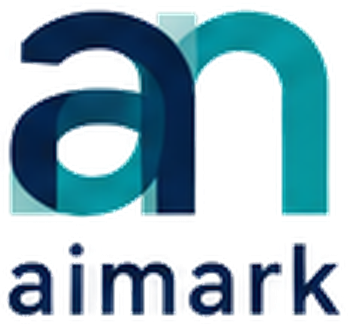
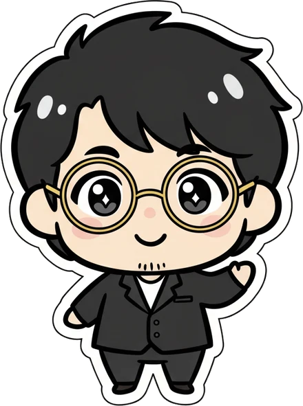
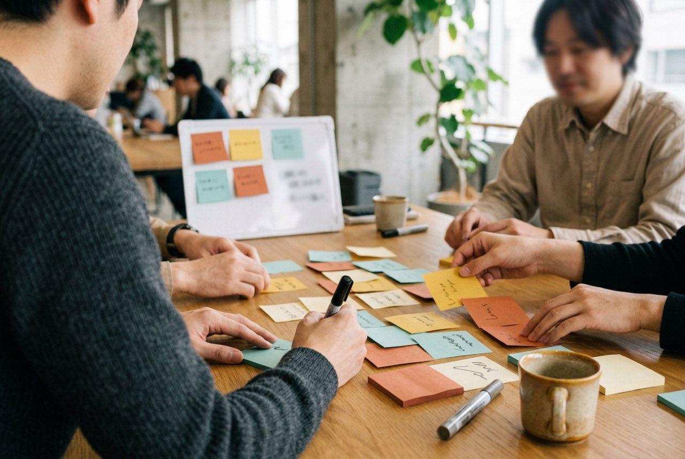

AIMARK × TEAM × AI 1DAY HACKATHON
正解は、なんでもあり。
チームとAIでアイデアをカタチにする、
AIMARKの1DAYハッカソン。
Letter

こんにちは、かいです。今回、イベントの企画を、かおりさん、しいなさんと一緒に作りました！
このイベントは、僕自身がAIMARKに感じている価値「みんなで楽しみながら、AIスキルが上達する」を、
1日でギュッと全部得られる場所にしたいと思って、みんなでイベントの中身を作り込みました！
というのも、僕がAIMARKに入ったばかりの頃、AIエージェントの使い方をほとんど分かってなかったんですよね。
MCP、サブエージェント、CLAUDE.md、自己改善ループ…こういったものを見聞きはしてたけど、何をどう手をつけたらいいのかさっぱり分からずにいました。
それが今では、ショート動画の自動生成の仕組み構築、自己改善ループを組み込んだスキルの構築、MCP連携…etc
と、我ながら、結構速い速度でAI力が上がってるな〜と実感してます🤔
もしAIMARKに入ってなかったら、これほどAI力は身につきませんでした。
このイベントでは、僕が成長できた、AIMARKにある「AI力が大幅に伸びる秘訣」を、ふんだんに散りばめました。
せっかくなので、ここでは「その秘訣」について、共有したいと思います🙌
これはAIあるあるだと思うんですが、AIって有象無象の情報が大量に流れますよね。
僕が1人で情報を集めていた頃、「これで5時間の仕事が10分に！」みたいな宣伝文句が本当に多くて「胡散臭いなぁ」「本当かなぁ」と、半信半疑の日々が続きました。
（しかも、AIで実験するのが楽しいのに、これをシェアできる人がいないのも寂しかった🥹）
でもAIMARKのイベントに毎回参加していると、
AI熱量が高い人達から、いーっぱい話を聞くことができたんですね。
ここで、AI活用法の引き出しが、ちょっとずつ自分の中に蓄積されていきました。
この引き出しが増えたことが、他では得られない財産なんですね。
というのも、日々AIを使っていく中で、当然「全然うまくいかないー！」という時があるじゃないですか。
僕の場合、Opus 5になった時、マジでClaudeの文章力が落ちまくって、本当に苦労したんですよ。（酷い時はメルマガを1記事書くのに6時間ぐらいかかってました…。）
そんな時に、「あの時、複数のAIを組み合わせるスキルの組み方を教えてくれたな〜」と思い、試すわけですね。
すると、AIの文章力が、かなり良くなったんですよ！（お陰様でメルマガの執筆時間が、平均で2時間ぐらい減少しました😭）
今まで数ヶ月間、AIMARKで大量に引き出しを吸収させていただいたから、僕のAI力もどんどん伸びたんだと思います。（自分で言うか！と突っ込まれそうですが、本心からそう思っています。）
このように、日々色んな方から得た引き出しが、1つ1つの課題を解決するキッカケになるんです。
AIに悩み相談をしたら、解決策は提案してくれます。でもその解決策がうまく回らない時って、全然ありますよね。
だから、AI力を上げる上で大事なのは、「どれだけ多くの引き出しを、自分自身が持っておくか」なのです。
これが、冒頭でお伝えした「AI力が大幅に伸びる秘訣」の正体です。
とはいえ、僕が引き出しをたくさん得られたのは、AIMARKのイベント全部（オンライン、オフラインの両方）に出席して、日々色んな方のお話を聞いてきたからです。
でも、仕事が忙しい方、ご家庭をお持ちの方は、イベント全部に出席するのは非常に厳しいと思います。
だからこそ！！！
AI活用の引き出しが大量に得られる1日を作りたい！
そういう個人的な思いで、運営委員会の皆さんと一緒にイベントを作り込みました。
今回のイベントにご参加いただければ、あなたが抱える課題解決のヒントが、きっとたくさん見つかりますよ。
では、なぜ「チームでのアプリ開発」が、AI活用の引き出しを増やせるのか。
みんなで良いアプリを作ろうと頑張ったら、
議論しますよね。
チームの中で、本当にたくさんのアイデアが飛び交うはずです。
僕はAIMARKの全イベントに出席してるからこそ確信しているのですが、ここのコミュニティの方々、本当にビックリするぐらい色んなAIの使い方してますよ！
本当、今まで何度「え！そんな使い方あるんですね！」と驚いたことか…。（これが良い引き出しになるんですよ）
ですので、真剣にアイデアを出し合うほど、当然1人1人の中にある引き出しも、たくさん飛び出してきますよね。
多種多様な人たちと真剣にアプリを作り上げたら、1日で相当引き出しが増えると思いませんか？
僕は、このイベントがあなたのAI力向上に、間違いなく繋がると確信しています。
そして、共にアプリを作ったチームメイトは、その夜からAI友達になって、翌日からDiscordで一緒にワイワイできるようになります。
引き出しが増えて、AI友達も増えるなんて、一石二鳥じゃないですか。
ただ、
「私にはそんな、人の学びになる引き出しなんてない…。」
「アプリを作ったことがないから、当日迷惑をかけてしまわないか不安…。」
と思ってしまう方も、きっとおられると思います。
ご安心ください！
僕は、バイブコーディングをやった事がない方にも、自分専用のアプリを作る楽しさを知ってほしいです。
ですから、アプリ作りが初めての方にも安心して楽しんでいただけるよう、考えうる限りサポート体制を整えております。
（とはいえ初回の開催ですので、運営メンバーのぎこちなさがあっても、温かい目で見てくださいね…汗）
ですので、今回のイベントも開発経験は不問です。
そして、AIMARKの皆さんは本当にいい人ばかりですから、間違いなく「参加してよかったー！楽しかったー！」と思える、実りある1日になりますよ🤭
「AI好きな人たちとワイワイしながら、色んなAIの使い方を知りたい」という方は、ぜひ奮って参加してください。
一緒にアプリ開発を楽しみましょう😆
Schedule
朝、全チームに同じお題が出ます。
そこから3〜4名のチームで、「誰の、どんな場面の、何を解決するサービスにするか」を決めて、AIで形にして、売り方まで考えます。
夕方には、同じお題から始めたはずの5チームが、全く違うサービスを持って並びます。それを全員で見る日です。
ターゲット、用途、利用シーン。切り口を変えながら、チームでお題を再解釈します。
ゴールは、「誰の、どんな場面の、何を解決するサービスか」が1行で言えること。ここが、マーケターの本業がいちばん効くところです。

見つけた価値を、AIでアプリの最小版にしていきます。
完成品でなくて大丈夫です。まず、触れるところまで。詰まったら手を挙げてください。技術サポーターが入ります。
誰に売るか。何を価値として伝えるか。サービス名とキャッチコピーまで作って、3分の発表に仕立てます。
最後は全員の投票です。軸は「自分が使いたい」「売れそうだと思った」サービス。技術力の高さを競う場ではありません。
| Time | Programme |
|---|---|
| 10:00 | 受付・開場 |
| 10:15 | オープニング（お題発表・チーム発表） |
| 10:35 | チーム内アイスブレイク（自己紹介から始めます） |
| 10:50 | ① FIND｜価値を見つける |
| 12:20 | 中間共有・昼休憩 |
| 13:00 | ② MAKE｜AIで形にする（途中休憩あり） |
| 15:30 | ③ SELL & PITCH｜売り方とプレゼンをつくる |
| 16:15 | 発表（1チーム3分） |
| 16:40 | 全員投票 |
| 16:50 | 表彰・クロージング |
| 17:00 | 終了（希望者で懇親へ） |
時間は目安です。正直に書くと、運営も全員、この形式のイベントは初めてです。だから細かい手順書は用意せず、チームの判断で前後させてもらう進行にしています。
代わりに、お昼の中間共有で各チームが「うちはこの方向で行きます」を1分ずつ話します。他のチームの切り口が耳に入るのは、ここが最初です。
Outline
| 日程 | 2026年9月後半を予定 （会場の確定後、正式にご案内します） |
|---|---|
| 時間 | 10:00〜17:00 （受付 10:00〜／終了後、希望者で懇親） |
| 形式 | オフライン開催 |
| 会場 | 調整中（確定次第、このページでご案内します） |
| 定員 | 参加者15名（3〜4名ずつのチームに分かれます） |
| 参加費 | 調整中（会場費の確定後にご案内します） |
| 持ち物 | ノートPC（必要な環境は、参加確定後に事前にご案内します） |
| 参加条件 | 開発経験・チーム開発の経験は問いません |
| サポート | 技術サポーターが各チームを巡回します |
| 主催 | AIMARK運営委員会 |
チームは運営が組みます。仕事のジャンルや、普段使っているAIが散らばるように分けます。
会場と参加費は、決まり次第このページを更新します。
Questions
参加できます。というより、開発経験ゼロを前提に設計しています。手を動かすのはAIで、技術サポーターが各チームを巡回します。必要なのは、コードを書く力より「誰が欲しがるか」を考える力のほうです。
当日は、AIに強い人も、そこまで強くない人も混ざります。広告の人とECの人では「誰が欲しがるか」の答えが違う。毎日見ているものが違うこと自体が、この日の材料です。詳しさより、あなたの職種の視点を持ってきてください。
最初の15分は、自己紹介とアイスブレイクから始めます。1チーム3〜4名の少人数で、全員に発言の機会が回る進行にしています。
筋の悪いアイデアほど歓迎です。FINDの前半は「NGなし・数優先」で、思いついた案を全部書き出すルールにしています。運営が先に、いちばん売れなさそうな案を出します。
手を挙げてください。技術サポーターか運営が入ります。必要なら、他のチームも含めて全員で考えます。詰まったチームを放っておかない進行にしています。
当日の朝に発表します。事前に決めすぎると、当日の面白さが削れるからです。代わりに、参加確定後のアンケートで「AIで作ってみたいもの」を聞きます。お題の範囲は、その回答を見て決めます。
完成度は問いません。まず「触れる」ところまでを目指します。投票の軸も「自分が使いたい」「売れそうだと思った」サービスで、技術力の高さを競う場ではありません。
17時に終了します。そのあと、希望者で懇親の場を予定しています。こちらは自由参加です。
Apply
朝は、隣の人が何をやっている人かも知りません。夕方には、その人の手元を丸一日ぶん見終わっています。
参加を申し込む 1DAY申込の受付は、会場と参加費が決まってから開始します。決まり次第、このページとDiscordでお知らせします。